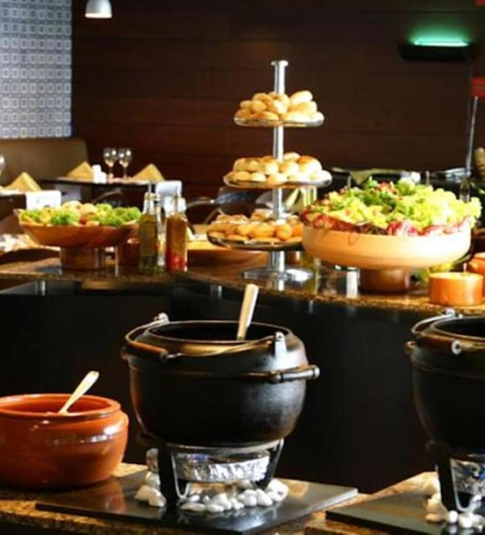
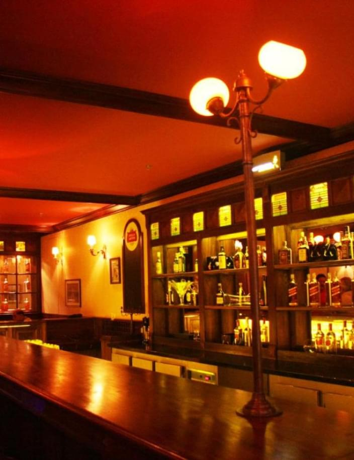
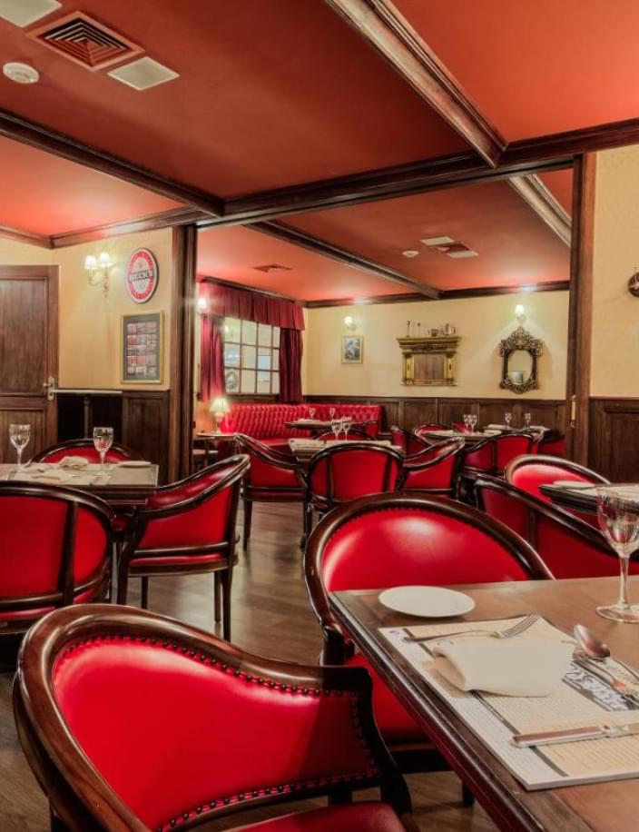
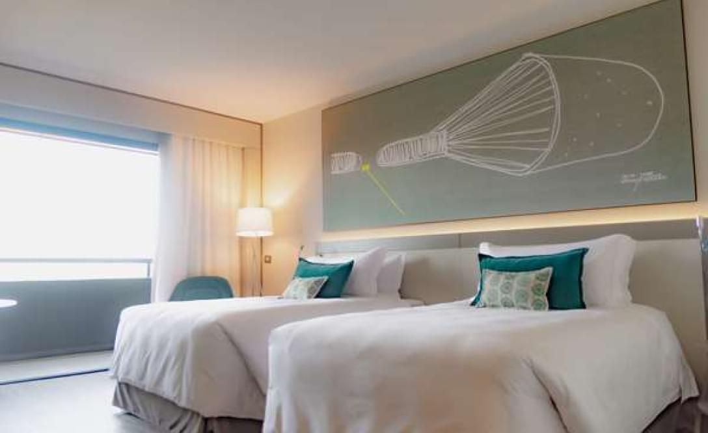
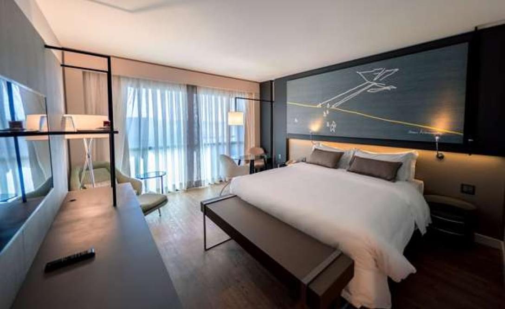
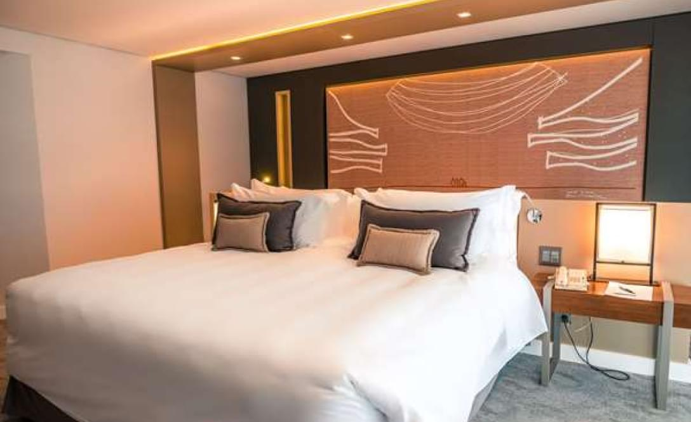
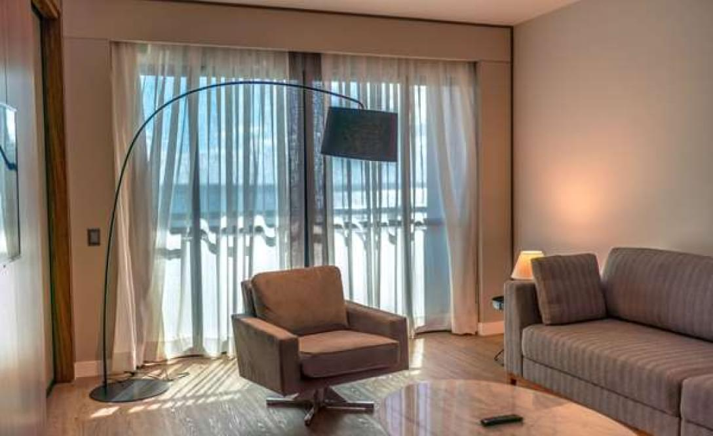

Royal Tulip no Brasil é a escolha ideal para uma estadia de longa duração, principalmente se você valoriza uma avaliação alta e procura as melhores condições.

OFERTA DE FÉRIAS COM PEQUENO ALMOÇO INCLUÍDO
Royal Tulip oferece vários tipos de quartos espaçosos que proporcionam conforto e aconchego. Estão elegantemente mobilados e equipados com tudo o que necessita, incluindo pequeno-almoço
OFERTA PARA IDOSOS
A Royal Tulip no Brasil é a escolha ideal para idosos que apreciam uma avaliação elevada e procuram o melhor lugar para se hospedar.
Restaurante e bar


O restaurante e bar do Royal Tulip Hotel no Brasil são conhecidos por suas altas avaliações e ocupam os primeiros lugares na lista dos melhores estabelecimentos da cidade. Este local é a escolha ideal para gourmets que valorizam uma cozinha de qualidade e um ambiente único.
O Restaurante Royal Tulip oferece um menu requintado elaborado por chefs requintados para satisfazer os gostos mais sofisticados. Aqui você pode saborear pratos de diversas cozinhas mundiais, da brasileira à europeia e asiática.
Quartos de hotel

Quarto padrão
Os quartos standard do Royal Tulip Hotel no Brasil são bem avaliados e estão entre os melhores da sua categoria. Estes quartos oferecem acomodações confortáveis e comodidades modernas para atender às necessidades até dos hóspedes mais exigentes.

Quarto superior
Os quartos standard do Royal Tulip Hotel são espaçosos e elegantes, combinando elementos de design moderno com toques tradicionais. Uma cama com colchão confortável e lençóis macios proporcionará um sono reparador após um longo dia.

Quarto de luxo
O Quarto Deluxe do Royal Tulip Hotel no Brasil é um espaço de primeira classe que oferece alto nível de conforto e luxo. Estes quartos estão localizados nos andares mais altos do hotel e oferecem vistas magníficas da natureza circundante ou do horizonte da cidade.

Suíte
O design do quarto deluxe utiliza móveis modernos e acessórios elegantes para criar um ambiente aconchegante e atraente. O quarto dispõe de uma área de estar separada, onde os hóspedes podem relaxar após um longo dia enquanto desfrutam de comodidades superiores.